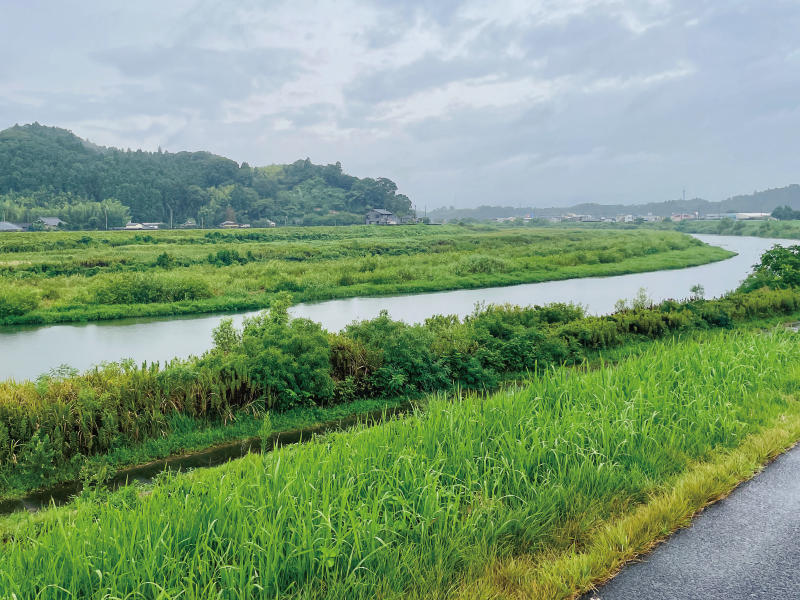
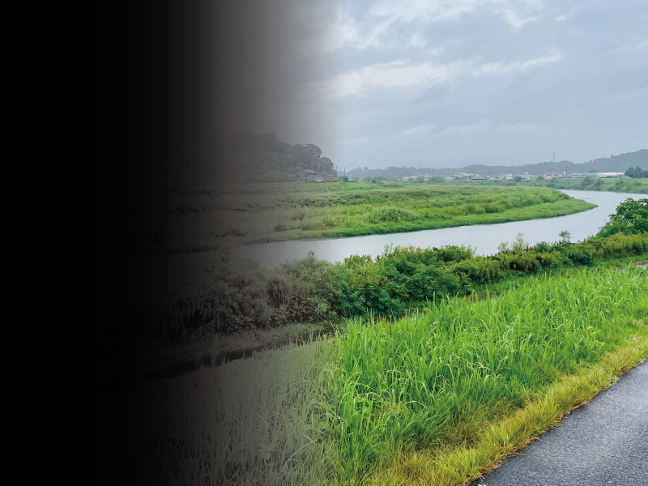

普段あまり体調を崩さず偏食もなく、適度に動き、健康には自信があった私ですが、4月の終わりに突然頭痛を感じ始めました。多忙な労働環境下にいたので「働きすぎたかな…」と思い、早く寝ようと床についたのを覚えています。
体の異変は睡眠をとればたいていが回復してきた経験から、当時も市販の頭痛薬で様子を見ることにして過ごしました。しかし数日たっても一向に良くならず…。日に日に症状は悪くなっていましたが、連休中という事もあり、安静に過ごすのみで耐えていました。
連休明け、頭痛はまだ続いていましたが、出勤しようと起き上がると目に違和感が。左側、視界の約三分の一が真っ暗で何も見えていないことに気が付きました。頭痛は右側、視野の欠損は左側。それでも私は、職場に向かいました。
流石に体調がおかしいとは思っていたものの、仕事に穴を開けるわけにはいかないとか、五月病を疑われたり怠けていると思われるのが嫌だとか、そんなことばかり気にして体調を後回しにしたのです。
仕事を頑張りたい社会人の皆さん、気持ちは本当によくわかります。周囲の目を気にしてしまうのも理解できます。でも、体調が悪い時は無理をせず休んでくださいね。私もすぐに行院へ向かうべきでした。命が一番大事です。猛省しています。
なんとか職場に辿り着くもフラフラでまともに働くことはできず、周囲に心配され、午後の仕事を代わってもらいまず眼科に向かいました。帰れと言ってくれた職場の皆さんは命の恩人です。ご迷惑をおかけしました。
眼科では視力検査や視野検査を行い、やはり左側が見えていないと診断されました。てっきり検査をして目薬をもらってすぐに帰れるものだと思っていたのですが「目じゃなくて脳に問題があるかも。急いで脳神経外科に行って！」とお医者様に伝えられました。
あまりの頭の痛みと視野が狭いのとで、今思えば救急車を呼べばいいのに、自力で隣町の病院に駆け込みました。「1人で行ける？救急車呼ぶよ」と先生はおっしゃってくれたのに、この時も「まだ歩けるから大丈夫、私なんかが救急車を呼んだら迷惑になる」と思ってしまったのです。
他人に甘えたり、助けてもらったりする基準が、私の中でグチャグチャだったなぁと思います。自分では無理をしていることに気が付きにくく、本当に怖いです。病院に着いてからは一人でまともに歩けず、看護師さんに車いすを押してもらいながらCTスキャンを取りました。
※画像は普段見ていた景色のイメージと、見え方が1番ひどかった時のイメージです。
目が見えない!? ＆激しい頭痛 原因は？

